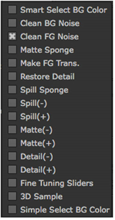

Primatte has a feature that attempts to eliminate the first three steps of the more standard keying procedure. The Auto-Compute button is a good starting point and it may make your keying operation much easier.
| 1. | Click on the Auto-Compute button. Primatte attempts to automatically sense the backing screen color, eliminate it, and even get rid of some of the foreground and background noise that would normally be cleaned up in the Clean BG Noise and Clean FG Noise phases of keying with Primatte. |
| 2. | If you get good results then jump ahead to the spill removal tools. See Spill Removal - Method #1. |
| 3. | If you don't get the results you wanted from Auto-Compute, please continue from this point on to get the basic Primatte operation procedures. See Smart Select BG Color |
The basic functionality for the Primatte interface is centered around the operation dropdown menu and the Viewer window.

There are four main steps to using the Primatte and Select BG Color is the first step.
|
|